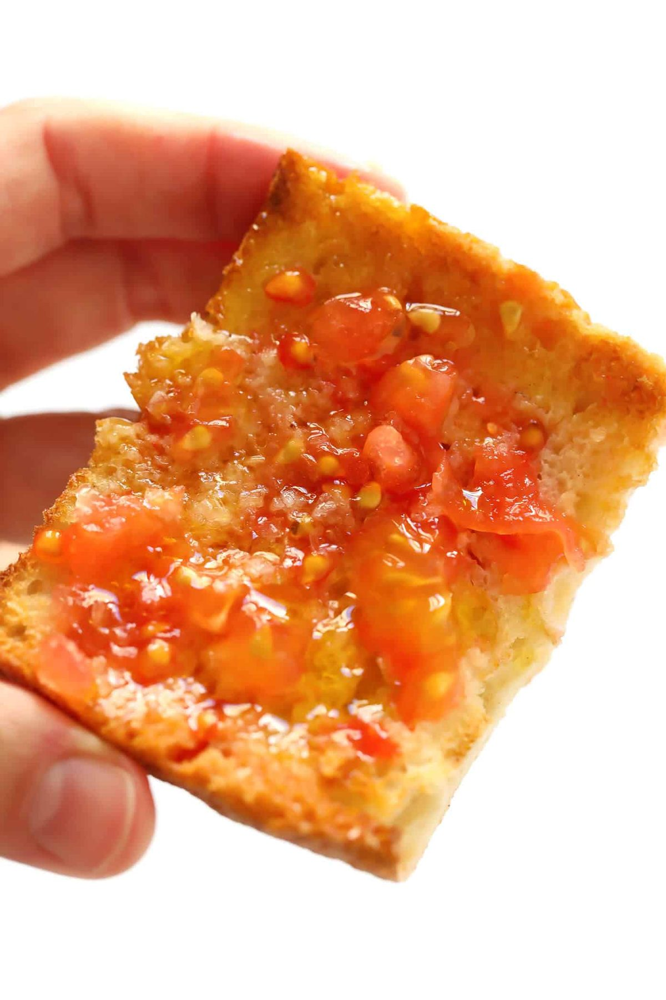
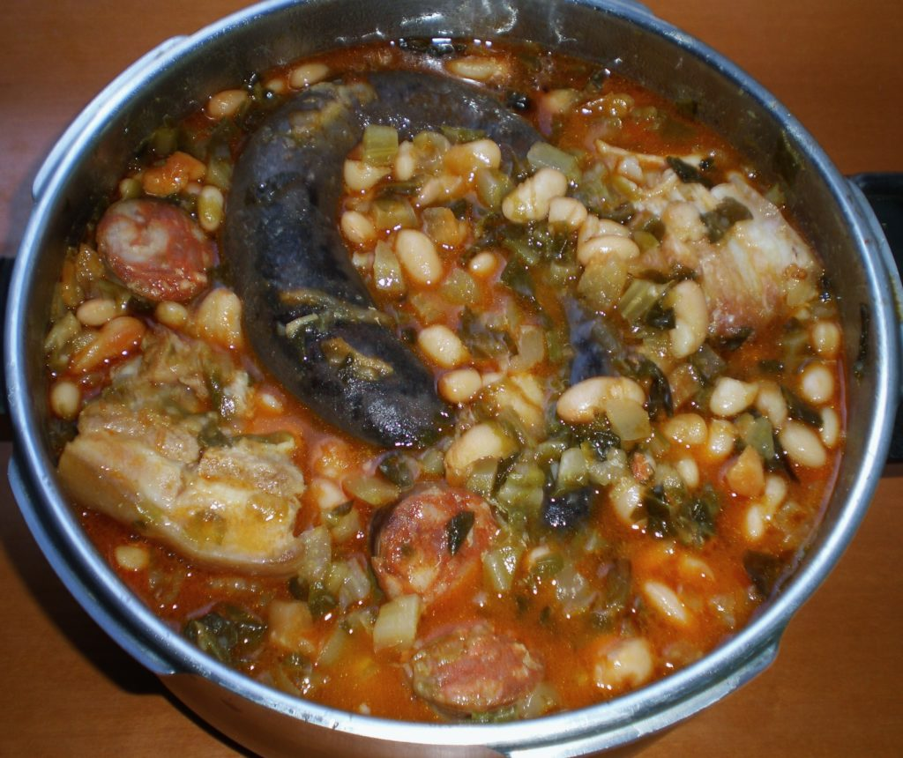
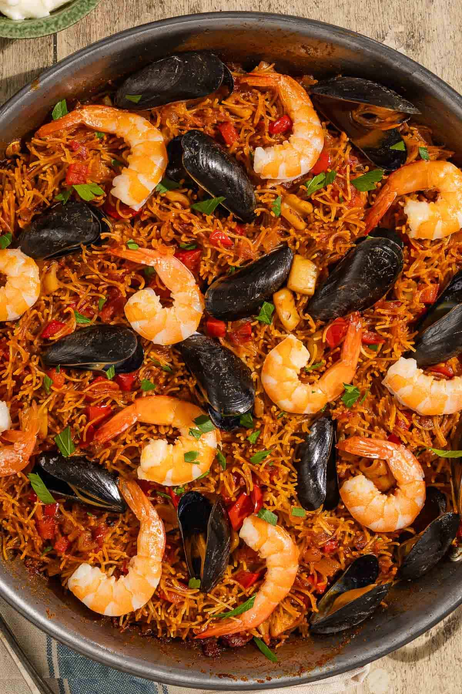
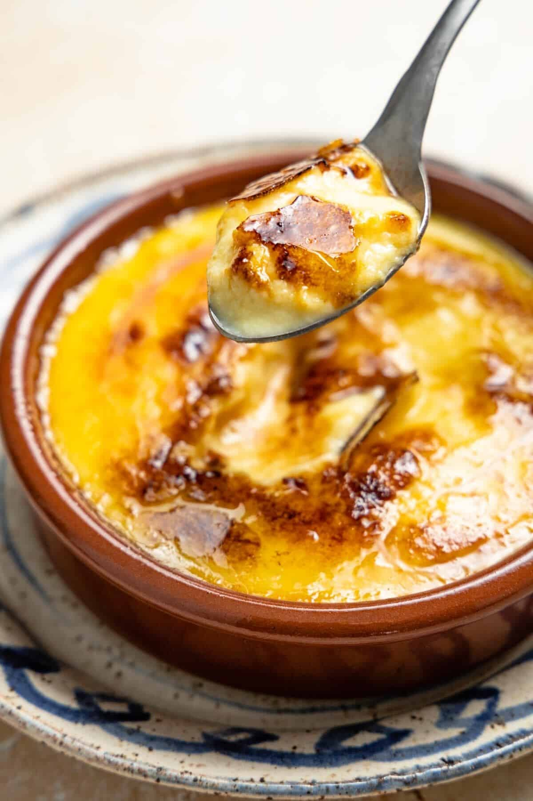
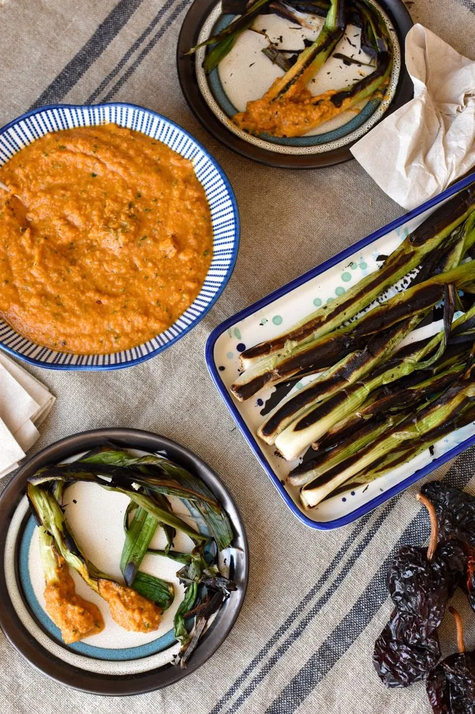
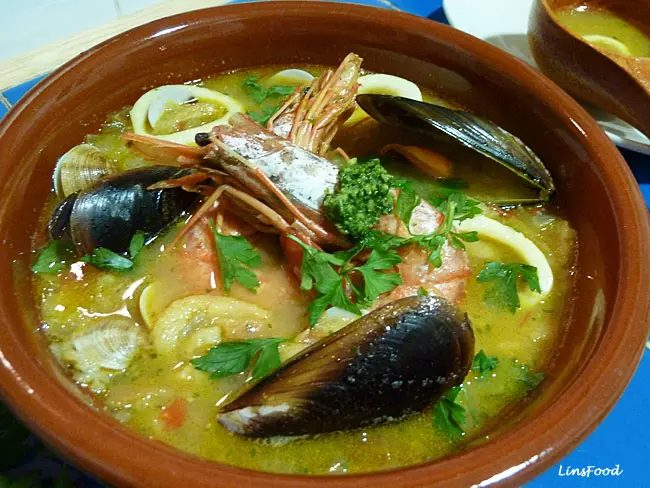
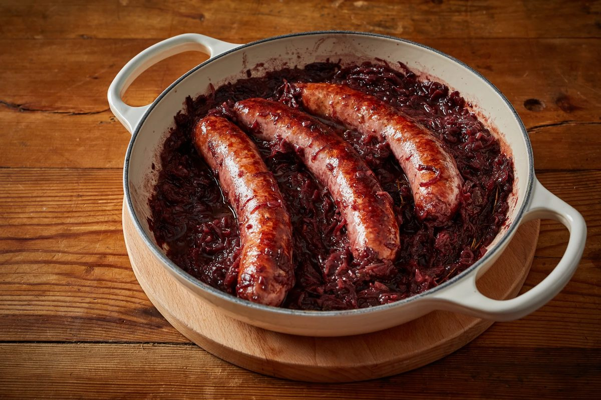
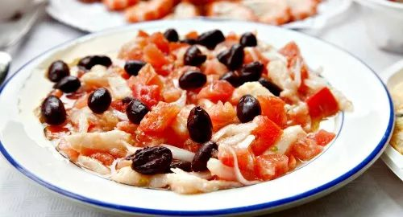
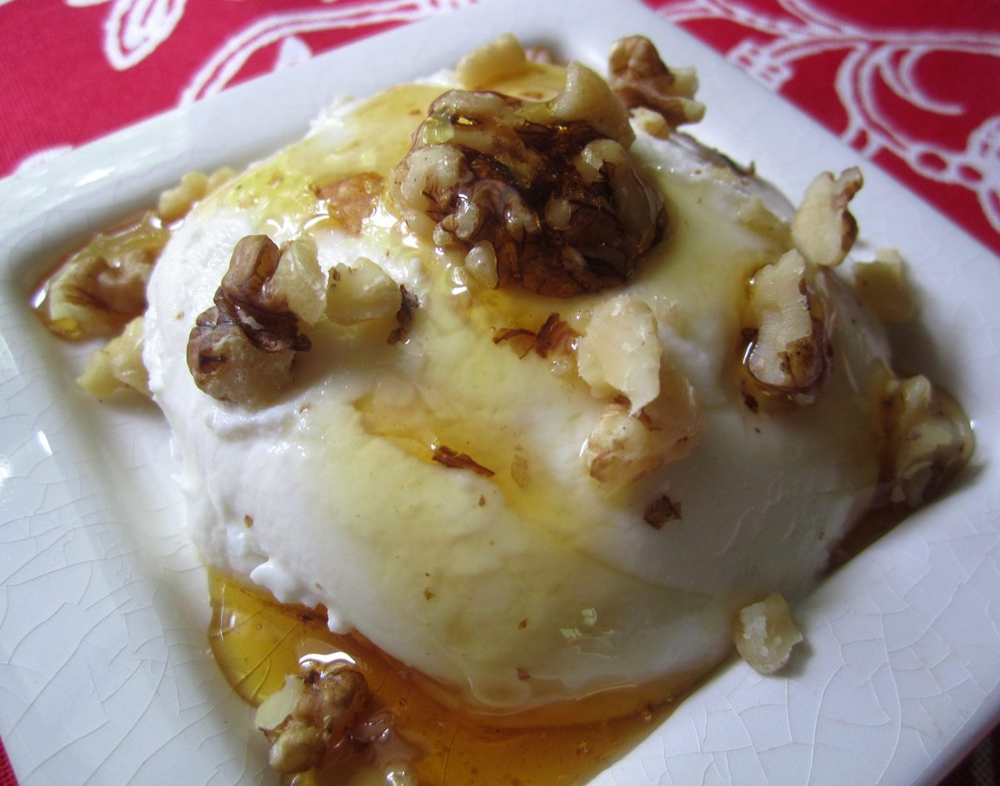
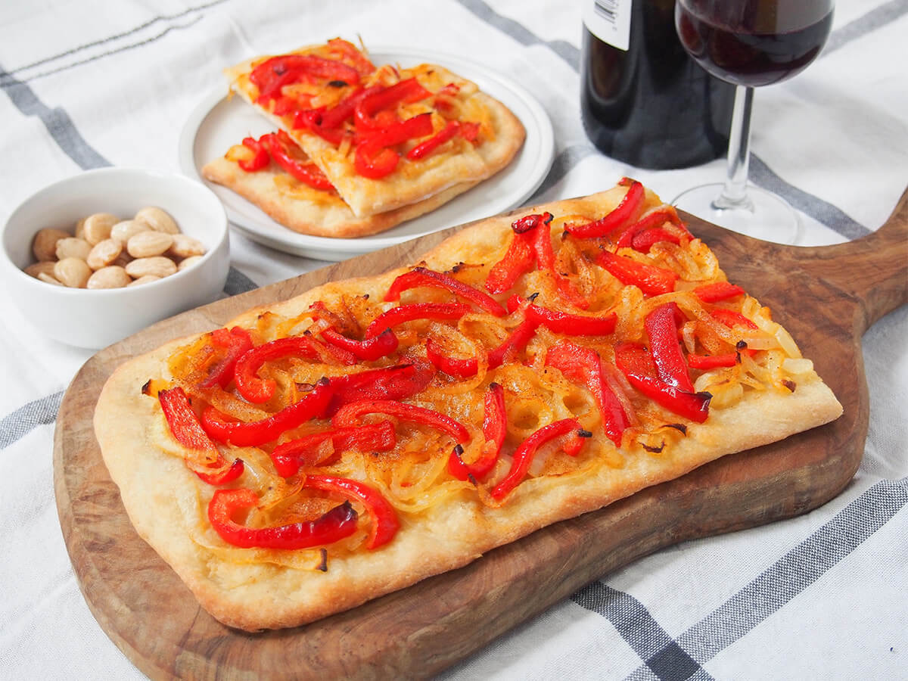

La cuisine catalane est l'une des plus anciennes et des plus respectées d'Europe. Elle puise dans l'abondance du littoral méditerranéen, des plaines intérieures fertiles et des produits des contreforts des Pyrénées. Le résultat est une cuisine à la fois rustique et raffinée — construite sur des ingrédients simples et de qualité, avec des saveurs franches et généreuses.
La caractéristique déterminante de la cuisine catalane est la rencontre de la mer et de la montagne (mar i muntanya). Des combinaisons qui pourraient sembler insolites ailleurs — poulet aux crevettes, porc aux moules, lapin aux seiches — sont parfaitement naturelles ici et enracinées dans des siècles de tradition.

🍽pa-amb-tomaquet.jpgLa pierre angulaire de la cuisine catalane. Du pain frotté de tomate mûre, arrosé d'huile d'olive et terminé par une pincée de sel. Servi à pratiquement chaque repas — la simplicité portée à la perfection.

🍽escudella.jpgUn copieux ragoût hivernal de pois chiches, légumes, porc, poulet et grosses boulettes de viande appelées pilota. Servi traditionnellement en deux temps : le bouillon d'abord, puis la viande.

🍽fideua.jpgUn cousin de la paella, préparé avec de courtes nouilles au lieu du riz, cuites dans un riche bouillon de poissons et fruits de mer. Originaire de Gandie mais profondément ancré dans la culture côtière catalane. Servi avec de l'aïoli.

🍽crema-catalana.jpgLa crème brûlée originale : une crème soyeuse parfumée au zeste de citron et à la cannelle, recouverte d'une couche de sucre caramélisé. Elle date du XIVe siècle et précède le crème brûlée français.

🍽calcots-romesco.jpgDe longues ciboulettes grillées sur feu vif jusqu'à être carbonisées à l'extérieur et sucrées à l'intérieur. Dégustées avec la romesco — une sauce généreuse d'amandes, noisettes, piments séchés, tomate et huile d'olive.

🍽suquet-de-peix.jpgUn ragoût de pêcheur de la Costa Brava — poisson du jour mijoté avec des pommes de terre, du safran, de la tomate et une picada d'amandes, d'ail, de persil et d'huile d'olive. Simple et profondément savoureux.

🍽botifarra.jpgLa grande saucisse catalane, à base de porc, de sel et de poivre. Grillée au charbon et servie avec des haricots blancs (mongetes). Il en existe des dizaines de variétés régionales : noire, blanche et sucrée.

🍽esqueixada.jpgUne salade rafraîchissante de morue salée avec des tomates, de l'oignon, des olives, de l'huile d'olive et du vinaigre. Le poisson est effiloché cru — esqueixar signifie déchirer. Un classique entrée estivale.

🍽mel-i-mato.jpgLe plus simple et le plus parfait des desserts catalans — du fromage blanc frais arrosé de miel sombre, souvent du miel local. Le mató est fabriqué dans les contreforts pyrénéens et vendu sur les marchés.

🍽coca.jpgUne base plate de pâte ou de pain garnie d'une grande variété d'ingrédients sucrés ou salés : oignons caramélisés, poivrons, pignons de pin, fruits confits. Dégustée lors des fêtes et des rassemblements familiaux.
La cuisine catalane repose sur une poignée de sauces fondamentales qui apparaissent tout au long de la gastronomie. L'aïoli — une épaisse émulsion d'ail et d'huile d'olive — accompagne les poissons, les viandes grillées et la fideuà. La romesco est une sauce complexe de tomates rôties, piments séchés, fruits à coque grillés et huile d'olive, utilisée avec les calçots, le poisson et les légumes. La picada est une pâte de pain frit, d'amandes, d'ail, d'herbes et parfois de chocolat, incorporée dans les ragoûts et les soupes en fin de cuisson pour épaissir et approfondir la saveur.
La Catalogne produit certains des meilleurs vins d'Espagne dans onze zones DO (Denominació d'Origen). La région du Penedès est le berceau du Cava, le célèbre vin pétillant espagnol élaboré selon la méthode traditionnelle. La DO Priorat produit des rouges puissants et minéraux à partir de vieilles vignes de Grenache et Carignan poussant sur des sols ardoisés. La DO Empordà, la plus proche de Tamariu, produit des blancs frais et des rouges de plus en plus remarquables des contreforts du Cap de Creus.
Les Catalans mangent tard selon les standards de l'Europe du Nord. Le déjeuner — le repas principal — commence rarement avant 14h et se prolonge souvent jusqu'à 16h. Le dîner ne commence que très rarement avant 21h. Une journée typique commence par un café et une viennoiserie, suivi d'un en-cas à mi-matinée, d'un long déjeuner, d'un goûter en fin d'après-midi et du dîner. Ce rythme est profondément culturel et vaut la peine d'être adopté pendant votre séjour.